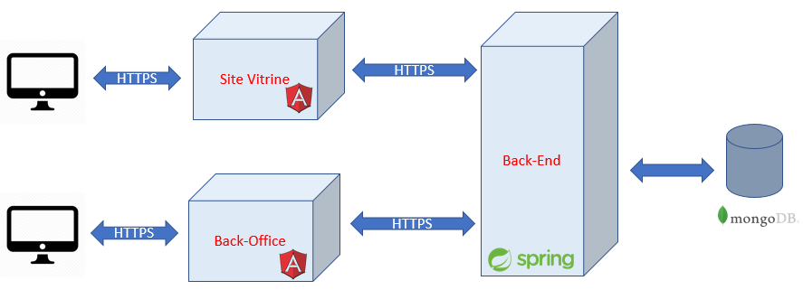

Introduction
Ce mini projet s'effectue dans le cadre de tester la capacité du candidat à concevoir une application web en utilisant les nouvelles technologies : Angular 6 pour la partie Front-End et Spring Boot pour la partie Back-End.
Acteurs
3 acteurs principaux interviennent dans cette application:
- Internaute: peut voir le site du vitrine sans connexion
- Utilisateur: doit obligatoirement s'authentifier afin d'acheter des produits
- Administrateur: gére les produits et les utilisateurs
Architecture de la plateforme
L'application est composé de 3 composants principaux: 2 applications Front-End Angular pour l'internaute/utilisateur et l'administration et une application Back-End en Spring Boot exposant les web services qui vont étre utilisés dans toute la plateforme.

Besoins fonctionnels
Back-Office
- Gestion des produits (Liste/Ajout/Edition/Suppression)
- Le produit est caractérisé par son label,prix et quantité
- Gestion des utilisateurs (Liste/Ajout/Edition/Suppression)
- L'utilisateur est caractérisé par son Nom,Prénom,Email et password (crypté non affiché)
- Authentification
Info
Pas Besoin d'implémenter la fonctionnalité d'ajout d'un administrateur, vous avez la possibilité d'ajouter l'admin dans la BDD directement.
Front-Office (Site Vitrine)
- Affichage des produits
- Affichage d'indication de l'indisponibilité du stock en cas (quantité <0)
- Acheter un produit
- L'utilisateur doit étre authentifié
- Décrémenter la quantité du produit
- Inscription
- Formulaire à remplir
- Authentification
Info
Pour la partie Authentification vous devez travailler avec JWT
Source
Vous devez réaliser 3 projets dont 2 projets Front avec Angular 6 et un projet avec Spring Boot. Pour les deux projets front :
- Vous trouvez un projet en angular 6 pour la partie Back-Office que vous éte censé à le cloner et réaliser vos taches.
- Pour le site vitrine vous trouvez 3 pages HTML avec leur styles. Votre role est de migrer ces pages en un projet Angular pour pouvoir compléter vos taches.
Votre Mission
Vous devez réaliser ces taches dans l'ordre:
- Conception (Use case,Class Diagram)
- Initialisation du projet & Implémentation des modéles (Spring Boot)
- Préparation du formulaire pour l'ajout produit (Front Back-Office)
- Implémentation du WS (Web Service) pour l'ajout produit (Spring Boot)
- Préparation du liste des produit (Front Back-Office)
- Implémentation du WS pour la liste des produit (Spring Boot)
- Suppression d'un produit à partir du liste des produits (Front&Back)
- Migration du HTML vers un projet Angular (lien décrit dans la partie Source)
- Préparation du liste des produit (Front Site vitrine)
- Inscription d'un utilisateur (Front Site Vitrine)
- Implémentation d'un WS de création de l'utilisateur (Spring Boot)
- Préparation de l'authentification (Front Site Vitrine)
- Implémentation du WS de l'authentification avec JWT (Spring Boot)
- Acheter un produit (Front&Back)
- Affichage du liste des utilisateurs (BackOffice)
- Suppression d'un utilisateur (BackOffice)
- Edition du produit (BackOffice)
Bonus
Vous pouvez ajouter ces deux taches comme un plus
- Ajouter une image à un produit
- Confirmation par mail après la création d'un nouveau utilisateur
Warning
-
Vous devez initialement créer 3 répos dans le git (github,bitbucket,gitlab...) contenant les trois projets et les nous envoyez par mail recrutement@vayetek.com pour faire le suivi au fur et à mesure.
-
A la fin de chaque taches vous êtes censé faire un commit indiquant le numéro de la tache.
-
Pour la tache numéro 1, vous pouvez faire des captures sur la conceptation et le commiter dans le projet du spring Boot